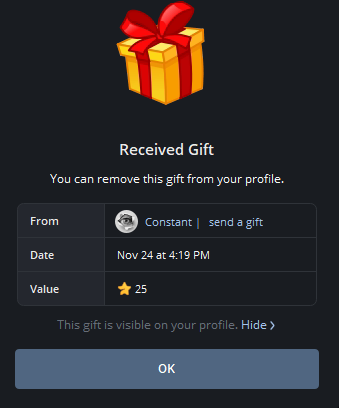

Комплексные проверки
Проверка физических и юридических лиц: репутация, связи, риски и подтверждение сведений из открытых источников.
Мониторинг угроз
Отслеживание деструктивных сообществ, инфраструктуры и потенциальных угроз в цифровом пространстве.
Аналитика цифровых активов
Исследование крипто-кошельков, транзакций и бирж, построение цепочек движения активов.
Работа с источником
Разведывательные мероприятия, построенные на прямом контакте с человеком, в рамках этических и правовых норм.
Business Intelligence CTF
Выполнено 100% конкурсных заданий по бизнес-разведке. Официальное поощрение от организаторов за продемонстрированный высокий уровень технических компетенций.
Подробнее →
Отдел расследований Контр-Культуры
Активный участник отдела расследований culturie.digital
Freelance
Частные расследования и аудиты безопасности.
Самообразование
Самоучка. Практика на реальных кейсах и CTF-соревнованиях.
Этот проект — наглядное воплощение моих профессиональных принципов в области работы с открытыми данными (OSINT). Вся представленная информация получена из общедоступных источников с использованием строго легальных методов, соответствующих законодательству и условиям использования платформ.
Ключевой ориентир в работе — этический принцип «не навреди». Каждый кейс, исследование или заметка служат образовательным целям, развивают критическое мышление и повышают осведомлённость о цифровой среде.